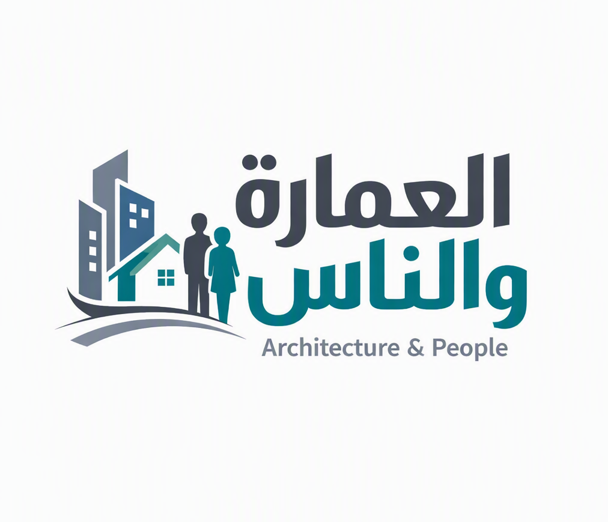

العمارة والناسArchitecture & People
منصة العمارة والناس
واجهة متناسقة بخلفية زرقاء متدرجة، وعناوين عالية التباين لتسهيل القراءة والتركيز.
الهوية البصرية
العناوين: كحلي داكن أو أبيض على الخلفية الغامقة. النصوص: أزرق داكن. العناصر التفاعلية: أزرق واضح مع خلفية بيضاء لضمان التباين.